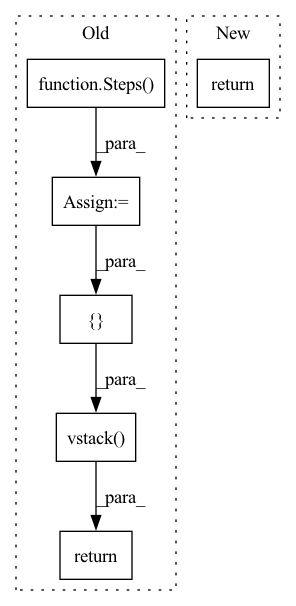

Pattern ID :33170

Before Change
def get_U(self, nsim):
pump = Steps(nx=1, nsim=nsim, values=None,
randsteps=int(np.ceil(self.ts*nsim/300)), xmax=0.5, xmin=0)
valve = Steps(nx=1, nsim=nsim, values=None,
randsteps=int(np.ceil(self.ts*nsim/420)), xmax=0.4, xmin=0)
return np.vstack([pump.T, valve.T]).T
def equations(self, x, t, u):
// States (2): level in the tanks
After Change
@cast_backend
def get_U(self, nsim):
u = step(nsim=nsim, d=2, min=0., max=0.4, randsteps=int(np.ceil(self.ts*nsim/300)))
return u
@cast_backend
def equations(self, t, x, u):
In pattern: SUPERPATTERN
Frequency: 3
Non-data size: 6
Instances
Fragment ID: 95880221
Project Name: pnnl/neuromancer
Commit Name: 1ecc05d13159f3e734cfd32012930034d3459397
Time: 2023-05-25
Author: aaron.tuor@pnnl.gov
File Name: src/neuromancer/psl/nonautonomous.py
M Class Name: TwoTank
N Class Name: TwoTank
M Method Name: get_U(2)
N Method Name: get_U(2)
M Parent Class: ODE
N Parent Class: ODE_NonAutonomous
M File Name: src/neuromancer/psl/nonautonomous.py
N File Name: src/neuromancer/psl/nonautonomous.py
M Start Line: 267
M End Line: 271
N Start Line: 165
N End Line: 166
'>
Before Change
seed = 3
delta_u = Steps(nsim=nsim, values=None, randsteps=100, xmin=0.0, xmax=1.0).T
delta_q = Steps(nsim=nsim, values=None, randsteps=100, xmin=-1.0, xmax=1.0).T
delta_r = Steps(nsim=nsim, values=None, randsteps=100, xmin=-1.0, xmax=1.0).T
return np.vstack([delta_u, delta_q, delta_r]).T
def equations(self, x, t, u):
After Change
@cast_backend
def get_U(self, nsim):
delta = step(nsim=nsim, d=3, min=[0.0, -1.0, -1.0], max=[1.0, 1., 1.], randsteps=100)
return delta
@cast_backend
def equations(self, t, x, u):
'>
Fragment ID: 95880220
Project Name: pnnl/neuromancer
Commit Name: 1ecc05d13159f3e734cfd32012930034d3459397
Time: 2023-05-25
Author: aaron.tuor@pnnl.gov
File Name: src/neuromancer/psl/nonautonomous.py
M Class Name: IverSimple
N Class Name: IverSimple
M Method Name: get_U(2)
N Method Name: get_U(2)
M Parent Class: ODE
N Parent Class: ODE_NonAutonomous
M File Name: src/neuromancer/psl/nonautonomous.py
N File Name: src/neuromancer/psl/nonautonomous.py
M Start Line: 627
M End Line: 631
N Start Line: 345
N End Line: 346
'>
Before Change
def get_U(self, nsim):
delta_u = Steps(nsim=nsim, values=None, randsteps=100, xmin=0.0, xmax=1.0).T
delta_q = Steps(nsim=nsim, values=None, randsteps=100, xmin=-1.0, xmax=1.0).T
delta_r = Steps(nsim=nsim, values=None, randsteps=100, xmin=-1.0, xmax=1.0).T
return np.vstack([delta_u, delta_q, delta_r]).T
def equations(self, x, t, u):
After Change
@cast_backend
def get_U(self, nsim):
delta = step(nsim=nsim, d=3, min=[0.0, -1.0, -1.0], max=[1.0, 1., 1.], randsteps=100)
return delta
@cast_backend
def equations(self, t, x, u):
'>
Fragment ID: 95880219
Project Name: pnnl/neuromancer
Commit Name: 1ecc05d13159f3e734cfd32012930034d3459397
Time: 2023-05-25
Author: aaron.tuor@pnnl.gov
File Name: src/neuromancer/psl/nonautonomous.py
M Class Name: Actuator
N Class Name: Actuator
M Method Name: get_U(2)
N Method Name: get_U(2)
M Parent Class: ODE
N Parent Class: ODE_NonAutonomous
M File Name: src/neuromancer/psl/nonautonomous.py
N File Name: src/neuromancer/psl/nonautonomous.py
M Start Line: 693
M End Line: 696
N Start Line: 401
N End Line: 402